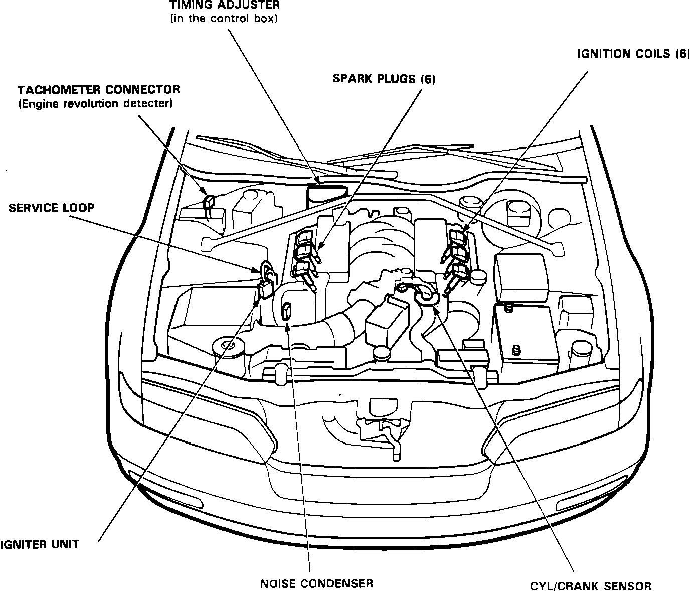

Crankshaft Position Sensor: Locations
Component Location:

CYL/CRANK SENSOR
Located on drivers side cylinder head, behind timing belt sprocket.
ELECTRONIC CONTROL UNIT (ECU)
Located under carpet, in passenger footwell.
IGNITER UNIT
Located on passenger side fender panel, on shock tower.
IGNITION COILS
Located on spark plugs at each cylinder.
IGNITION TIMING ADJUSTER
Located in the emission control box, on the firewall.
RADIO NOISE CONDENSER
Located in the engine compartment passenger side, near the ignitor unit.
TACHOMETER CONNECTOR
Located on the passenger side firewall.